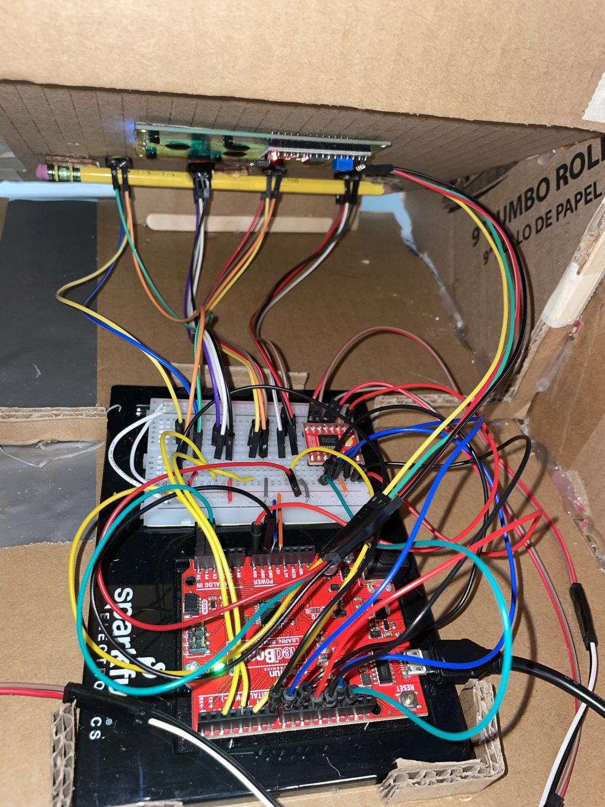
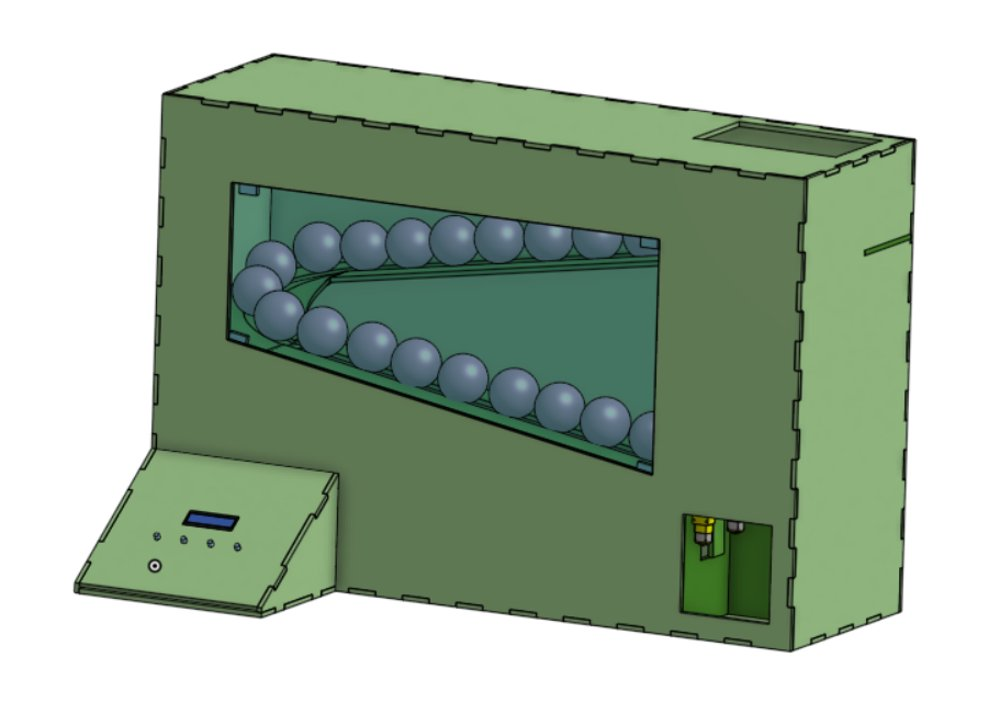

Project
Study Buddies
A vending-style device that dispenses free mental health resources to students on demand.
Vending Mechanism
Student Wellness

A vending-style device that dispenses free mental health resources to students on demand.
Students facing stress or mental health challenges often don't have quick, low-friction access to supportive resources in the moment they need them.

